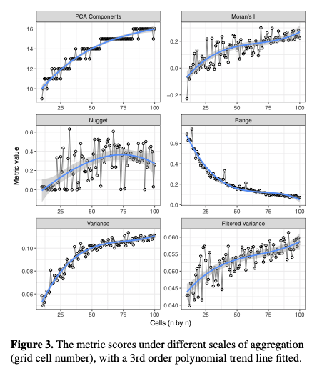

Possible Impacts of a Motorbike Ban on Transport in Hanoi
Contents
Possible Impacts of a Motorbike Ban on Transport in Hanoi#
Author: Eric Wanjau
Why is it that in a Megacity with 8 million people, 90% of the vehicles driven are motorbikes? What are the underlying factors influencing individuals’ travel behaviors and attitudes towards a proposed motorbike ban? What would be the impact of such a ban on the flows associated with other transport modes? This research addresses the aforementioned questions.
Project overview#
An overwhelming majority of inhabitants in Hanoi city use motorbikes as their primary means of transport. To put this into context, as of 2015 Hanoi had 4.9 million motorbikes and there are two and a half motorbikes per person (Van, 2009). One potential solution that has been suggested is to ban motorbikes in some areas of the city. However, with the current overwhelming use of motorbikes, any future ban will need support from the public to be successful. This 6-month project aimed at creating statistical and spatial models of transport behaviors and attitudes in relation to a potential motorbike ban. The aim of the modeling was to help policymakers predict the impact of different transport policy changes and to understand the process driving different travel behaviors. The models implemented were:
A Modal Spatial Interaction Model to investigate the modal shift of flows if a ban were implemented.
A boosted trees Classification Model aimed at predicting individuals’ attitudes towards the proposed ban and investigating the underlying factors/reasons.
The models along with other exploratory analyses were presented to policymakers using an interactive R shiny dashboard developed by LIDA data scientist Kristina Bratkova.
Data and methods#
The main data set used in this study is a bespoke transport survey of 30, 000 residents that was undertaken to capture the dynamics and trends of people’s regular travel in and around the city, including the attitudes towards different transport modes and a proposed motorbike ban. The travel survey collected data such as general information (e.g. age, location), travel behaviour (e.g. origin-destination trips, means of transport) and attitudes towards the ban (e.g. opinion on the ban, alternative vehicle if ban is implemented).
The classification model development workflow involved some Exploratory Data Analysis (such as Fig1), feature engineering (reformatting predictor values to make them easier for a model to use effectively), model training, tuning and evaluation, and finally probing the model to investigate variable importance and why the model makes the predictions it does. An Extreme Boosted Trees (XGBoost) model was used to classify individual respondents into two groups: those who agree and those who disagree with the potential motorbike ban. The model achieved the evaluation metrics shown in Fig2 and Table1.
|
|---|
Figure 1: How opinions varied based on home location with larger blobs representing more respondents |

|
|---|
Figure 2: Confusion matrix. |

Table 1: Evaluation metrics:
Metric |
Value |
|---|---|
Accuracy |
0.878 |
Recall |
0.853 |
Specificity |
0.919 |
PPV |
0.945 |
F-measure |
0.897 |
ROC_AUC |
0.953 |
The model’s performance was quite impressive: the accuracy shows that the model predicts accurately 87.8% of the test data, has an 85.3% probability of detecting a person would agree with the ban (recall) and 91.9% probability of detecting a person would disagree with the ban (specificity). Some of the techniques used to achieve the metrics above include:
Feature engineering techniques such as creating dummy variables, dealing with zero and near zero variance predictors, dealing with infrequently occurring observations etc.
Up sampling the training set since the data was imbalanced (having less number of respondents who disagreed with the ban)
Spatial cross-validation resampling to account for the presence of spatial autocorrelation in geospatial data.
Tuning XGBoost hyperparameters to obtain the combinations that lead to the best metrics and avoid over-fitting.
Using an ANOVA-based racing method for efficient tuning of model hyperparameters
In-depth explanations and accompanying code of the above are discussed in an upcoming paper (Factors affecting perceptions in transport - A deep dive into the motorbike ban in Hanoi, Vietnam) that will be submitted to an academic journal and shared in the project’s repository: https://urban-analytics.github.io/UTM-Hanoi/intro.html
This study also implemented a modal spatial interaction model that unlike previous studies, combines trip distribution characteristics and modal choice, allowing one to simulate the number of journeys made from origin zones to the destination zones by a particular transport mode. The model is presented below:
\(T_{\text{ij}}^{m}\) is the number of trips from origin i to destination j using mode m
\(A_{i}^{m}\) is the total number of trips generated at origin zone i by mode m
\(B_{j}\) is the total number of trips attracted at destination j
\(d_{\text{ij}}^{m^{{- \beta}_{m}}}\) is the cost (distance) of making a trip from origin i to destination j using mode m
\(A_{i}^{m}\) and \(B_{j}\) are known as balancing factors where \(A_{i}^{m}\) ensures that the predicted modal interaction flows leaving each origin equal the known value \(O_{i}^{m}\) and \(B_{j}\) ensures that the total predicted interaction flows arriving at each destination equal the known value \(D_{j}\)
Detailed theoretical and mathematical underpinnings of spatial interaction models are discussed in an upcoming paper (Spatial Interaction Modelling for Modal Shift: Application in an Emerging Mega-City) that will be submitted to an academic journal and shared in the project’s repository: https://urban-analytics.github.io/UTM-Hanoi/intro.html
Once the model parameters were calibrated and fit to the data, the following performance metrics were obtained:
metric |
estimate |
|---|---|
rmse |
10.2 |
rsq |
0.589 |
This indicates that on average, incorrect predictions are wrong by around 10 flows and the model can explain about 59% of the variability in the data, which was considered close enough to reproducing the original flow matrix.
Key findings#
Classification Model Results#
After obtaining satisfactory performance from the XGBoost model, this research then sought to explore the underlying factors driving the model’s predictions. One of the model interpretation techniques implemented was SHAP (SHapley Additive exPlanations). SHAP shows the importance of variables by comparing the model’s prediction with and without the variable in every possible order. The SHAP summary plot combines feature importance and feature effects with features being ordered according to their importance and colored according to the value of the feature from low to high as shown in Fig3:
 |
|---|
Figure 3: SHAP summary plot. Shapley values > 0 push the model towards ‘agree’ outcome. |
Some inferences we can derive from the Shapley plot are:
Freq_car_X0 (a dummy variable with a value of 1 if the respondent uses a car 0 times a week and 0 otherwise) has the largest effect on the model’s prediction. If a respondent does not use a car (Freq_car_X0 equals 1 and purple color) then they are less likely to agree with the ban as indicated by the low (negative) SHAP values.
The second most important variable is the distance to public transport (dist_to_pub) which is a numeric variable. It appears that larger distances to public transport are associated with the disapproval of the motorbike ban.
Respondents who considered cars as an alternative vehicle in case of a motorbike ban (tf_alt_veh_car) are more likely to approve the motorbike ban and hints at the growing popularity of cars in Hanoi.
Socio-demographic attributes such as age, gender, and occupation do not have a significant effect on the model outcomes.
SHAP summary plot give us first indications of the relationship between a feature and the impact on predictions. We can take a closer look at the exact form of the relationship by making SHAP dependence plot as shown in Fig4:
|
|---|
Figure 4: SHAP dependence plots of the first 20 important variables |

Spatial Interaction Model Results#
One of the survey questions was: What would be your alternative vehicle for this trip if a motorbike ban was enacted? To estimate the change in modal flows in the case of a ban, the Spatial Interaction Model was altered in the following way:
An alternative vehicle for each motorbike user was randomly selected from their responses
The new alternative vehicles were plugged back into the flow matrix to estimate new values of \(O_{i}^{m}\) (the total number of trips generated at origin zone i by mode m)
The modal SIM was recalibrated to obtain new values for the balancing factors \(A_{i}^{m}B_{j}\)
The multiplicative formula \(T_{\text{ij}}^{m} = \ A_{i}^{m}O_{i}^{m}B_{j}D_{j}d_{\text{ij}}^{m^{{- \beta}_{m}}}\) was used to obtain new scenario modal flows.
The table below shows an example of a motorbike ban scenario:
vehicle |
Flows before ban |
Flows after ban |
Change in flows |
|---|---|---|---|
taxi |
99 |
2652 |
2553 |
car |
5060 |
7294 |
2234 |
bus |
110 |
1887 |
1777 |
ebike |
876 |
2132 |
1256 |
bike |
870 |
2080 |
1210 |
walk |
287 |
1131 |
844 |
moto |
9868 |
0 |
-9868 |
In this scenario, majority of the flows previously associated with motorbikes would result to taxis, cars and buses and only a small number to walking. With this information, more downstream analyses can be performed for each particular mode. For instance, the map below in Fig5 shows the change in flows at destinations associated with ebikes in the event of a motorbike ban.
|
|---|
Figure 5: Change in flows at ebike destinations as a result of motorbike ban |

More importantly, the changes in routes taken by various vehicles from origin zones to destination zones can be observed. The maps below in Fig6 show the routes taken by ebike users weighted by the number of flows before and after the ban.
|
|---|
Figure 6: Map of routes weighted by flows. Left: before motorbike ban. Right: After motorbike ban |

Using the analyses above, policymakers are able to estimate the impact of a motorbike ban on the existing modes of transport used in the city, origin and destination zones, and corresponding routes/infrastructure.
Value of the research#
As outlined earlier, an overwhelming majority of Hanoi residents use motorbikes as their primary means of transport. The effects of such a large number and high density of motorbikes has led to severe problems such as traffic congestion, and noise and air pollution. To this effect, a motorbike ban has been proposed in some areas of the city. This research could support policymakers in the following ways:
a. The classification model developed (with an 89% accuracy on an unbalanced test set) could help policymakers predict individuals’ perceptions to the ban.
b. Leveraging on the various model explainability techniques used in this research, policymakers can identify the most and least important factors driving perceptions towards the ban and develop appropriate policies.
c. Using the spatial interaction model, policymakers can simulate modal flows in the case of a ban, the resulting modal changes of flows at various communes, and the impacts on the existing infrastructure.
d. Using the models and exploratory data analysis implemented in this research, policymakers can make more informed decisions with regards to the motorbike ban, identify policies that could lead to adoption of more environmental friendly modes of transport, and a glimpse of how flows within the city would shift.
e. Code notebooks, data and methodologies implemented in this research will be released to the wider research community.
Insights
a. Current usage and future consideration of cars as a means of transport is an important factor driving individuals’ perception of the motorbike ban. However, this is undesirable since it could potentially worsen the traffic congestion and pollution in the city.
b. Respondents who considered using the newly established tram lines are also more likely to agree with the ban of motorbikes.
c. Spatial variables such as home location (home_lon, home_lat) play important roles in individuals’ perception of the motorbike ban, with respondents of certain areas agreeing to the ban more than others and vice versa.
d. Survey respondents who are aware of the ban are more likely to agree to it and vice versa. This shows the need for public sensitization and involvement in the formulation of such policies if they are to be widely accepted and adopted.
e. From the Spatial Interaction Model: the usage of cars increases with increase in the trip distance while that of buses decreases with increase in trip distance. Improving public transport within the city could potentially result in a decrease in the use of private vehicles.
f. The modal Spatial Interaction Model gives a glimpse of the impact of the motorbike ban on existing modes of transport but also raises an important question: would the existing road infrastructure keep up?
People and Partners#
Eric Wanjau, Data Scientist, Leeds Institute for Data Analytics, University of Leeds, UK
Kristina Bratkova, Data Scientist, Leeds Institute for Data Analytics, University of Leeds, UK
Prof Nick Malleson, Professor of Spatial Science, Leeds Institute for Data Analytics, University of Leeds, UK (Lead Supervisor)
Prof Alexis Comber, Professor of Spatial Data Analytics, Leeds Institute for Data Analytics, University of Leeds, UK (Co-Supervisor)
Dr Minh Le Kieu, Lecturer in Transport Analytics, University of Auckland, New Zealand (Co-Supervisor)
Phe Hoang Huu, R&D Consultants, Hanoi City, Vietnam
Thanh Bui Quang, Faculty of Geography, VNU University of Science, Hanoi, Vietnam
Hang Nguyen Thi Thuy, VNU Vietnam Japan University, Vietnam National University, Hanoi, Vietnam
Funders#
This work has received funding from the British Academy under the Urban Infrastructures of Well-Being programme [grant number UWB190190].
References#
Van, H. T. (2009) Upgrading from motorbikes to cars : Simulation of current and future traffic conditions in Ho Chi Minh City, Journal of the Eastern Asia Society for Transportation Studies. Wilson, A. G. (1971) ‘A Family of Spatial Interaction Models, and Associated Developments’, Environment and Planning A: Economy and Space. doi: 10.1068/a030001.